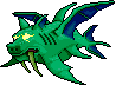

Duque Peixe-Dragão

|

|
Descrição
O Duque Peixe-Dragão é um chefe Hardmode que é encontrado no Oceano. Lutar contra Duque Peixe-dragão é completamente opcional
e não é necessário para a progressão do jogo, mas sua derrota recompensará o jogador com armas poderosas.
Duque Peixe-dragão é invocado quando você pesca no Oceano usando um Verme da Trufa.
Item super raro encontrado no subterrâneo do Bioma de Cogumelos, e capturado com uma rede.
Estatísticas
Dano:120-200
Vida Máxima:60000
Defesa:40-100
Recompensas
Asas do Peixe Dragão (6.66%)
Arma de Bolhas (20%)
Mangual-Dragão (20%)
Tufão de Navalhas (20%)
Cajado da Tempestade (20%)
Tsunami (20%)
Troféu do Duque (10%)
Máscara do Duque (14.29%)
Boss Anterior Próximo Boss